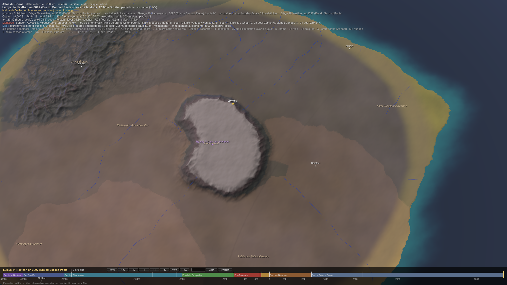

CIV-035 — Tawurt, les Monolithes du Silence
L'essentiel :
- le pays : Tawurt, « la Porte », aux antipodes de Sera. C'est le continent de la porte terrestre du Chaos, scellée au premier Pacte en −300. Sa capitale est Zyrrhal, la Cité-Monolithe, avec un monolithe central de 300 m (CIV-044 Zyrrhal). Les sanctuaires sont Azoryn, Draethal, Nulthar et Velmire ;
- le dieu : Sau-Shetau, le Gardien (Justice, Équilibre, Secrets). C'est le seul royaume où la loi est celle du dieu de la Justice (CIV-012 Le pouvoir et la loi) ;
- le peuple : ≈ 300 000 Nkaras. Le Gardien les a créés avec le Premier Fils, à son image, pour garder la porte. Les douze premiers sont nés vers −300 ;
- le corps (BIO-006 Les Nkaras) :
- ≈ 2,3 m pour ≈ 25 kg, et ≈ 300 ans de vie ;
- une couronne d'yeux, et pas de visage ;
- ils flottent près de la Porte, tombent loin d'elle ou sous le fer, et ne portent presque rien ;
- ils vivent du Chaos, de la brume et des sels ;
- ils parlent le Syrrh, du Tzéhar chuchoté (CIV-004 Les langues construites) ;
- la reproduction : un seul parent, une graine qui coûte une part du corps. Les places dans les Berceaux sont attribuées par le conseil. La transparence est un honneur. À la fin vient le dernier don : le Nkara se fond dans un Berceau ;
- la garde : ils veillent la Porte les Jours Sans Pacte. Leurs portes sacrées sont cerclées de fer, et ils les ouvrent avec un outil de bois (CIV-023 Les peuples hors de Sera).
1. L'origine : « nés de l'obéissance »
- Les premiers Nkaras ont été façonnés par l'énergie du Chaos stabilisée par le Gardien. C'est littéralement leur chair : une bonne part de leur corps est du Chaos lié, fixé et orienté (BIO-006 Les Nkaras).
- Le Premier Fils, qui a aidé à les créer, n'apparaît pas dans leur récit. Les Nkaras ne gardent que le Gardien : on obéit à celui qu'on voit à l'œuvre.
- Les « veilleurs immortels » : un Nkara vit ≈ 300 ans. Ce qui est immortel, c'est la lignée. Par le dernier don, chaque mort nourrit les graines, et la garde ne s'interrompt jamais.
2. Le gouvernement
| Rang | Ce qu'il est |
|---|---|
| Le Gardien | Sau-Shetau, invisible : nul mortel ne le voit |
| L'Apôtre du Gardien | la seule voix du dieu ; toute loi, toute guerre et toute paix sortent de sa bouche |
| Le Chœur des Veilleurs | treize grands moines-spectres, choisis par l'Apôtre, qui interprètent et appliquent ses décrets |
| Le Synode des Temples | les abbés des sanctuaires, une fois par an, pour transmettre les ordres et coordonner les missions |
| Le Cercle des Fonctions | les cinq ordres (§ 3) |
« La parole descend du Gardien comme la pluie tombe du ciel » : pas d'élection, pas de débat.
L'Apôtre (DIV-007 Héros, champions, héritiers et apôtres) :
- un dieu n'a qu'un apôtre par génération, et il ne parle pas en mots. L'apôtre reçoit des visions et des certitudes, et il les traduit. Tout Tawurt repose donc sur une seule traduction ;
- l'apôtre de Sau-Shetau est toujours un Nkara. Comme un Nkara vit trois siècles, un même apôtre peut parler pour le Gardien pendant deux cents ans. C'est la parole la plus stable du monde, et la plus difficile à corriger ;
- l'Apôtre Originel, « le premier mortel choisi », « le seul à avoir parlé directement pour le Gardien ». Les douze premiers ont été créés ; l'Apôtre Originel est le premier Nkara né d'une graine, donc le premier vraiment mortel. Le « treizième ».
Les treize Veilleurs : un par lignée (douze), plus le Doyen, le plus transparent de Tawurt, celui qui a le plus donné. Le treizième siège rappelle l'Apôtre Originel.
La natalité : un enfant naît parce qu'un ordre a demandé une place dans les Berceaux, et que le Chœur la lui a donnée. C'est pour cela que « tout Nkara naît avec un rôle » : il est attendu par son ordre avant même de germer.
3. Les cinq ordres, le Cercle des Fonctions
| Ordre | Ce qu'il fait | Où et comment |
|---|---|---|
| les Sentinelles | les routes et les sanctuaires ; les moines-guerriers | formés à Azoryn |
| les Archivistes | le savoir, les rouleaux de métal, les fresques | à Draethal. Leurs rouleaux sont d'argent ou d'étain, jamais de fer |
| les Herboristes | la médecine du corps et de l'esprit | ils tiennent les plantes de Tawurt (Lotus ectoplasmique, Racines-Sangsues) |
| les Géomants | les runes de protection et les cercles du Chaos ; les monolithes (§ 4) | à Draethal |
| les Navigateurs | les bateaux et les sentiers sacrés | l'ordre le plus dur : loin de la Porte, un Nkara tombe. Ils voyagent portés, et ce sont eux qui font le seul échange de Tawurt avec le monde (§ 7) |
4. Les monolithes : ce qui rend Tawurt habitable
Chaque monolithe stabilise ou dissout des flux instables. Il fait aussi autre chose :
- Un Nkara ne flotte que sur un sol saturé de Chaos (BIO-006 Les Nkaras). Or la fuite de la Porte ne sature qu'une zone limitée.
- Les monolithes sont de grandes pierres gravées de glyphes (la pierre, jamais le fer). Ils répandent la fuite de la Porte sur le plateau et la dirigent vers les Berceaux.
- Sans les monolithes, Tawurt serait trop petit pour les Nkaras. Ce sont eux qui tracent leur royaume : « villes-sacrées verticales » et villages autour de chaque monolithe.
- « Chaque monolithe est un œil » : un glyphe ressent le flux qui le traverse. Un monolithe sent toute variation du Chaos autour de lui, et donc tout ce qui entre.
- « Ne jamais toucher un monolithe sans permission » : toucher la pierre, c'est dévier le flux d'un village entier.
- Les runes argentées : l'argent est un métal neutre, qui laisse passer un peu de Chaos sans le boire (CHI-004 Les métaux et le Chaos). Incrusté dans la pierre, c'est un circuit, comme la damasquinure. C'est le métal des Nkaras, à l'opposé du fer.
5. La justice : l'effacement de l'âme
Le Tribunal de l'Oubli juge vite, et ses verdicts sont lapidaires.
- La méditation forcée : des jours ou des mois d'isolement et de silence devant un monolithe.
- L'effacement rituel de l'âme, pour les hérétiques. C'est le parjure.
- Au Passage, chaque Nkara jure obéissance au Gardien sur son vrai nom (CIV-016 La société).
- Contester le Gardien, c'est rompre ce serment, et le parjure vide l'âme (≈ 80 g de TNT pour une âme ordinaire).
- Le Tribunal ne tue donc personne : il fait renouveler le serment, et l'hérétique qui ment s'efface tout seul. « Le contester, c'est disparaître » n'est pas une menace, c'est une loi de la nature.
- La vraie peine est ailleurs : l'hérétique n'a pas de dernier don. Son corps ne rejoint pas les Berceaux, et sa lignée le perd.
6. La vie
- Les habits : des robes noires ou translucides, toujours assez ouvertes en bas pour laisser le voile libre, sinon ils ne flottent plus.
- La capuche couvre la couronne d'yeux. On ne se découvre que pour juger. « Un œil couvert ne juge pas. »
- Les tatouages runiques sont des glyphes de Chaos lié sous la peau translucide. Seuls ceux qui sentent les flux les voient : les initiés.
- La nourriture : les Nkaras n'ont pas de bouche ; ils boivent par une poche. Tout se boit : des infusions d'herbes, des bouillons de céréales et de rares bouillons de viande de monstres apprivoisés, en plus du Chaos, de la brume et des sels.
- Les monstres apprivoisés sont surtout des porteurs. Un Nkara ne porte presque rien : ce sont eux qui portent les charges et les litières.
- Ce que sont les porteurs. Tawurt n'a pas de bêtes : ses grands herbivores sont des monstres de lignée, des antilopes et des buffles mutés de la savane du nord. Les Nkaras en ont domestiqué quelques lignées, comme Kemazo l'Éland géant (MON-001 Primordiaux I - la terre, BIO-001 Bêtes, monstres et Lumas § 7). Ce sont des bêtes calmes de 0,6 à 1 t, à grandes cornes, qui portent 150 à 200 kg, tirent chacune comme cinq hommes, et passent les rampes, les lacets et les ponts de pierre. Ce ne sont pas des bêtes de course : elles vont au pas.
- Ce qu'ils mangent. Les monstres de lignée mangent moins près des territoires, puisqu'ils y boivent le Chaos (CIV-019 Les voyages et les transports § 2), et tout Tawurt est un territoire (§ 9). Leur part de Chaos croît avec leur masse et avec la charge du lieu : au cœur d'un territoire, un porteur d'une tonne en tire près des trois quarts de ses besoins (SIM-08 Le corps et le Chaos) ; sur les bords du plateau, bien moins. Le reste est un fourrage : l'herbe de la savane du nord, la steppe du centre, et du foin séché qu'on monte à Zyrrhal et qu'on embarque à Thryz. Ils boivent de l'eau de pluie ou de brume, jamais celle de l'Oubli.
- La langue : le Syrrh chuchoté, et le Tzéhar gravé pour les rites. La « pensée projetée » n'est pas de la télépathie : c'est la langue des voiles. On parle en faisant vibrer ses filaments dans le champ, et seul un autre Nkara la sent.
- Les fêtes : la Journée du Veilleur, pour les douze fondateurs ; la Nuit des Monolithes, une méditation collective ; et les Jours Sans Pacte, leur plus lourde garde.
- Les maximes : « Chaque monolithe est un œil », « La voix du silence juge plus que la parole », « Celui qui conteste la pierre ne conteste pas l'homme, mais le Gardien ».
- Le tabou : l'individualisme. Chez un peuple sans couple et sans famille, à un seul parent, c'est presque naturel.
7. La défense et le monde
- Pas d'armée : la discipline et la puissance de chaque moine-guerrier.
- Leurs armes sont légères, puisqu'ils ne portent presque rien : bâtons runiques, dagues sacrées, sceaux de paralysie et de scellement.
- Les Reliques du Silence dissolvent, paralysent ou scellent.
- Les barrières runiques sont des pièges invisibles autour des sites.
- Leurs forces sur leur sol : ils voient tout autour d'eux, glissent sans bruit, et les monolithes sentent qui entre.
- Leur faiblesse : le fer. Un envahisseur en armure de fer est le seul qui leur fasse peur.
- La doctrine : « quiconque ose entrer est effacé du monde ». Elle vise ce qui menace la Porte : une armée, un voleur de sanctuaire, un Hejeti. Le voyageur qui vient en paix n'est pas un ennemi (§ 9).
- Les Hejeti, leur vrai ennemi : les Hejeti veulent libérer la Mère, et Tawurt garde la porte terrestre.
- Leurs déguisements ne trompent pas les Nkaras, qui ne regardent pas les visages mais les flux : un pli d'espace se sent.
- C'est une quatrième chose qui trahit un Hejeti, avec les Balances, les lecteurs de Naora et les Masques vivants (CIV-032 Les Hejeti, la culture et le regard des autres). La plupart des intrus « effacés » sont des Hejeti.
- Le commerce : presque l'autarcie. Le seul échange passe par le sel, et par les Navigateurs (CIV-023 Les peuples hors de Sera). Tawurt vend le sel de ses salines, tiré de la mer la plus salée du monde, et achète à Maakar les fragments du dieu des Dimensions tombés de l'Anneau, pour qu'ils ne tombent jamais aux mains des Hejeti. La garde de la Porte se prolonge jusqu'au marché.
- Le regard des autres : la crainte et le respect. Khodom les respecte en s'en méfiant (CIV-033 Khodom). Les moines sont des légendes vivantes.
8. Le pays et les sanctuaires

Tawurt est un dôme : le mont Zyrrhal monte à 5 400 m au-dessus de la Porte (PLA-004 Géologie du monde), au milieu d'un plateau de 300 à 900 m, le Plateau des Âmes Errantes. Tout le pays est saturé de Chaos (au-dessus de 0,55, le seuil des territoires), et plus on s'approche du mont, plus il l'est. Le climat est tropical, de 12 à 20°S : savane humide au nord (1 200 à 1 600 mm), steppe au centre, désert chaud au sud-ouest.
| Lieu | Rôle | Où |
|---|---|---|
| Zyrrhal (capitale) | la Cité-Monolithe, le monolithe de 300 m | sur le flanc nord du mont, à 3 500 m. Le Sanctuaire du Gardien est au sommet |
| Azoryn | les Sentinelles | au nord-est, au bord de la Forêt Suspendue |
| Draethal | les Archivistes et les Géomants | au centre-est, sur le plateau |
| Velmire | le sanctuaire fortifié des montagnes | dans les Monts Éthérés, au nord-ouest, à 2 000 m |
| Nulthar | le bastion frontalier des marais | au sud-ouest |
| Thryz | le port | sur la côte ouest |
- Les Monts Éthérés, au nord-ouest, montent jusqu'à 3 800 m : ils sont frais et humides.
- Les Marécages de Nulthar sont au sud-ouest, au bord du désert : la Rivière de l'Oubli descend du plateau et se perd dans les marais. C'est un delta intérieur au bord du désert.
- Le mont s'appelle « Mont Zyrrhal », la ville Zyrrhal.
L'Okavango descend des hauts plateaux de l'Angola et ne rejoint jamais la mer : il s'étale en un marais de 15 000 km² au milieu du désert du Kalahari, au Botswana, où presque toute son eau s'évapore (McCarthy, Journal of Hydrology, 2006).
9. Les étrangers
Tawurt n'a qu'un peuple : les Nkaras. D'autres y viennent, mais aucun n'y fait souche. C'est un pays hostile à la vie.
Pourquoi on n'y vit pas longtemps.
- Tout le pays est un territoire. Le Chaos y est partout au-dessus de 0,55, le seuil des territoires (§ 8), et plus fort encore près du mont. Un étranger y respire du Chaos agité jour et nuit : il dérive (MON-012 Altérés). Les marques viennent en quelques mois ; le germe, en un à trois ans pour une âme ordinaire, plus tard pour une âme de héros. Il n'y a pas d'accoutumance, seulement un temps compté. Le fer ralentit la dérive, mais on ne vit pas dans une cuve.
- Les monstres : Tawurt est le continent du portail, et ses monstres sont parmi les plus forts du monde : Drakes d'Ombre, Loups Éthériques, Spectre Miroir, le Roi-Linceul, et les monstres de la Mer de Tawurt (MON-003 Draconiques, MON-005 Spectraux, MON-002 Primordiaux II - mers, plantes et géants). Les Boules de foudre passent à travers les Nkaras, presque sans matière, mais frappent les étrangers (MON-009 Élémentaires).
- Le pays ne nourrit pas un étranger : les Nkaras ne cultivent presque rien, il n'y a pas de bêtes, et l'eau de l'Oubli brouille la mémoire. C'est quand un mortel arrive que Tawurt cherche à manger : les Navigateurs font monter du grain par le sel, les Herboristes cueillent, et l'on prépare pour l'étranger seul ce que les Nkaras ne mangent pas. L'Hospice de Thryz est le seul bâtiment du pays qui a des marches, des lits et une cuisine (CIV-166 Le style de Tawurt).
Pourquoi pas de descendance. Dans les villages des lisières de Sera, où l'air est seulement plus chargé qu'ailleurs, un enfant sur cent naît déjà marqué : l'embryon se forme dans le Chaos, et le hasard s'inscrit dans son corps pendant qu'il se construit (les Enfants de Lisière, MON-012 Altérés). À Tawurt, au cœur d'un territoire, la mère dérive elle-même, et l'enfant qu'elle porte se forme dans un Chaos bien plus fort. Une grossesse menée à Tawurt ne donne presque jamais un enfant sain, et les dérivés se reproduisent à peine. Aucune lignée étrangère n'y a pris racine.
Les colons espagnols de Potosí, à ≈ 4 000 m dans les Andes, perdaient presque tous leurs nouveau-nés : la chronique rapporte que le premier enfant espagnol à y survivre naquit plus de cinquante ans après la fondation de la ville, alors que les Andins y avaient leurs enfants sans peine (Monge, Acclimatization in the Andes, 1948). Le manque d'oxygène pèse d'abord sur la grossesse : en altitude, les bébés naissent plus petits, et les pertes sont plus nombreuses.
Pourquoi on y va quand même. Comme on monte aux monastères des hautes montagnes :
- pour monter : tout Tawurt est un territoire, et le plus chargé du monde. S'entraîner au cœur d'un territoire, c'est le souffle des territoires : l'âme s'y recharge sans rien coûter (PUI-005 Les voies des héros). Des héros viennent y passer une saison, ou quelques années, pour franchir un palier ;
- pour s'isoler : pas de cour, pas de marché, pas de bruit ; le pays le plus silencieux du monde ;
- pour faire pénitence : on demande aux Nkaras le silence et la méditation devant un monolithe, comme ils l'imposent à leurs propres fautifs (§ 5).
Combien, et qui en meurt.
- Le chemin : presque tous viennent de Narak, avec les Navigateurs qui rentrent (CIV-019 Les voyages et les transports) : ≈ 72 jours de mer, par les vents froids des quarantièmes. Environ un sur six meurt en route. Quelques-uns viennent par leurs propres moyens ; peu arrivent.
- Le nombre : ≈ 60 arrivées par an, presque toutes à Thryz (CIV-117 Thryz), et ≈ 100 étrangers présents à tout moment dans tout le pays.
- Qui en revient : environ un sur quatre, après une saison ou quelques années. Les autres meurent des monstres dans les Monts Éthérés et la Forêt d'Azoryn, se perdent dans les Plaines Miroitantes et la Vallée des Reflets Obscurs, ou dérivent. Beaucoup finissent dans les Marécages de Nulthar, où les cultistes vivants partagent les villages flottants des Gens de Nulthar avant de les rejoindre (MON-007 Nécro-intégrés). Un mausolée sur Tawurt est presque toujours celui d'un étranger (DIV-008 Mausolées et sanctuaires).
Les Nkaras et les étrangers.
- Ils ne sont pas hostiles. Un voyageur qui vient en paix est logé à Thryz, guidé sur les sentiers, et l'on offre à ses morts une place loin des Berceaux. L'hospitalité des Nkaras, c'est un lieu calme et à l'abri (BIO-011 L'alimentation des peuples § 5).
- Les monolithes sentent chaque étranger, et les Sentinelles lisent son flux. On ne lui demande pas qui il est : on le voit.
- Ce qui fait d'un étranger un ennemi : chercher la Porte ou les Berceaux, entrer en armes dans un sanctuaire, voler une pierre ou un rouleau, ou porter un pli d'espace, c'est-à-dire être un Hejeti (§ 7). Celui-là est effacé.
- Le fer : un étranger peut garder le fer qui ralentit sa dérive, mais il le laisse à la porte des sanctuaires.
Les plans des villes
Chaque ville a sa fiche, avec son plan, ses lieux et ses temps de trajet : CIV-044 Zyrrhal · CIV-113 Azoryn · CIV-114 Draethal · CIV-115 Velmire · CIV-116 Nulthar · CIV-117 Thryz
Liens
BIO-006 Les Nkaras · CIV-023 Les peuples hors de Sera · DIV-003 Dieux protecteurs des royaumes · DIV-007 Héros, champions, héritiers et apôtres · CIV-012 Le pouvoir et la loi · CIV-016 La société · CIV-032 Les Hejeti, la culture et le regard des autres · CIV-024 Les sept royaumes en 3097 · MON-012 Altérés · PUI-005 Les voies des héros